설치부터 열쇠 만들기, AI 에이전트 설정까지
1~4장까지만 따라 하면 앱을 쓸 수 있습니다. 5장 AI 에이전트는 API 키가 있어야 하므로, 키를 아직 못 받았다면 4장에서 멈추셔도 됩니다.
지금 배포본은 화면 문구의 한글화가 아직 진행 중입니다. 이 설명서의 그림도 전부 영어 화면이며, 버튼 이름은 그림에 보이는 영어 그대로 적었습니다. 눌러야 할 곳을 영어 이름으로 찾으시면 됩니다.
받은 파일을 열기 전에, 내 컴퓨터에 맞는 것인지부터 확인합니다.
Mac은 칩 종류에 따라 파일이 다릅니다. 화면 왼쪽 위 애플 메뉴 → 이 Mac에 관하여를 엽니다.
| 내 컴퓨터 | 받아야 할 파일 |
|---|---|
| 「칩」에 Apple M1/M2/M3…가 보이는 Mac | schoolx-macos-apple-silicon-…dmg |
| 「프로세서」에 Intel이 보이는 Mac | schoolx-macos-intel-…dmg |
| Windows | schoolx-windows-…exe |
그런데 그 증상이 아래 「확인되지 않은 개발자」 경고와 구별되지 않아, 안내를 아무리 따라 해도 안 열리는 상태로 막히게 됩니다. 안 열리면 먼저 파일을 잘못 받은 것은 아닌지 확인하세요.
이 설치본은 서명이 없습니다. 그래서 처음 한 번은 경고를 직접 넘겨야 합니다.
.dmg를 열고 앱 아이콘을 응용 프로그램 폴더로 끌어다 놓습니다.최신 macOS는 오른쪽 클릭으로도 막힐 수 있습니다. 그때는 시스템 설정 → 개인정보 보호 및 보안을 열면 아래쪽에 「SchoolX을(를) 열도록 허용」 버튼이 나옵니다.
.exe를 실행하면 “Windows의 PC 보호” 파란 창이 뜹니다.이 경고는 바이러스라는 뜻이 아니라, 배포자 서명이 없어서 나오는 안내입니다. 서명은 코드 작업이 아니라 유료 인증서 구매가 필요한 부분이라 내부 배포본에는 넣지 않았습니다.
SchoolX에는 아이디와 비밀번호가 없습니다. 대신 「열쇠(identity key)」 하나로 내가 나임을 증명합니다.
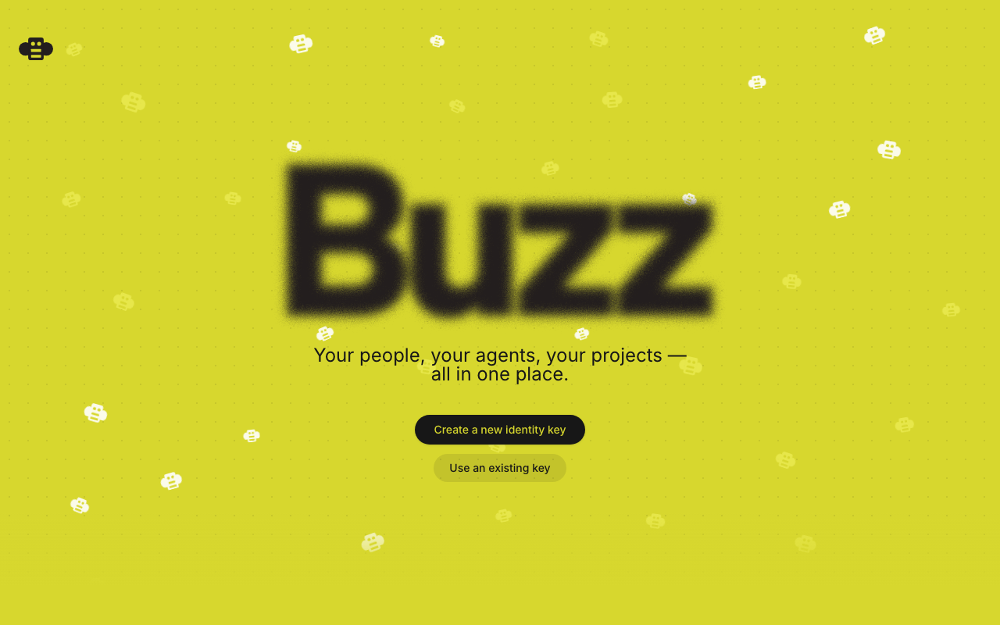
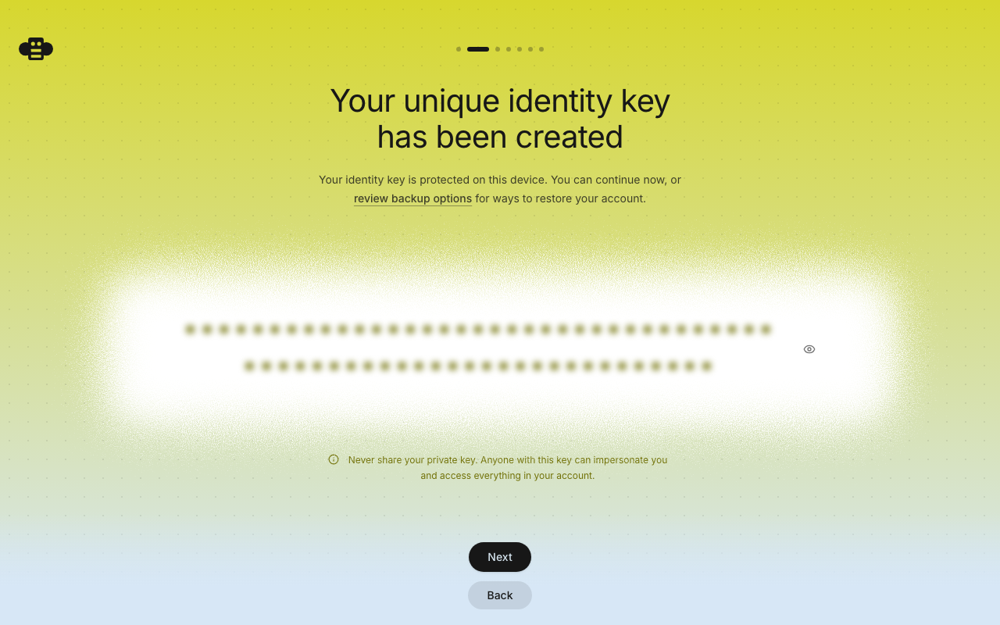
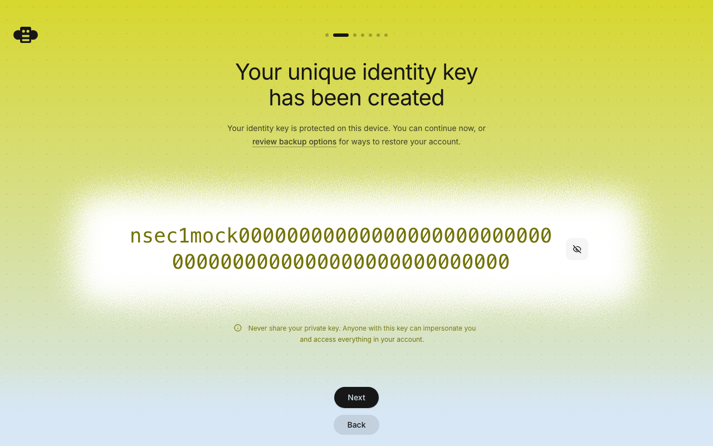
nsec으로 시작하는 긴 문자열이 내 열쇠입니다.
「비밀번호 찾기」가 없습니다. 관리자도 대신 복구해 줄 수 없습니다. 이 열쇠는 비밀번호가 아니라 집 열쇠에 가깝습니다 — 잃어버리면 새로 만드는 수밖에 없고, 그러면 이전 활동과 이어지지 않습니다.
그리고 이 열쇠를 다른 사람에게 보여 주면 안 됩니다. 열쇠를 가진 사람은 누구나 내 이름으로 글을 쓸 수 있습니다.
그림 2·3 화면의 review backup options 링크를 누르면 보관 방법을 고를 수 있습니다.
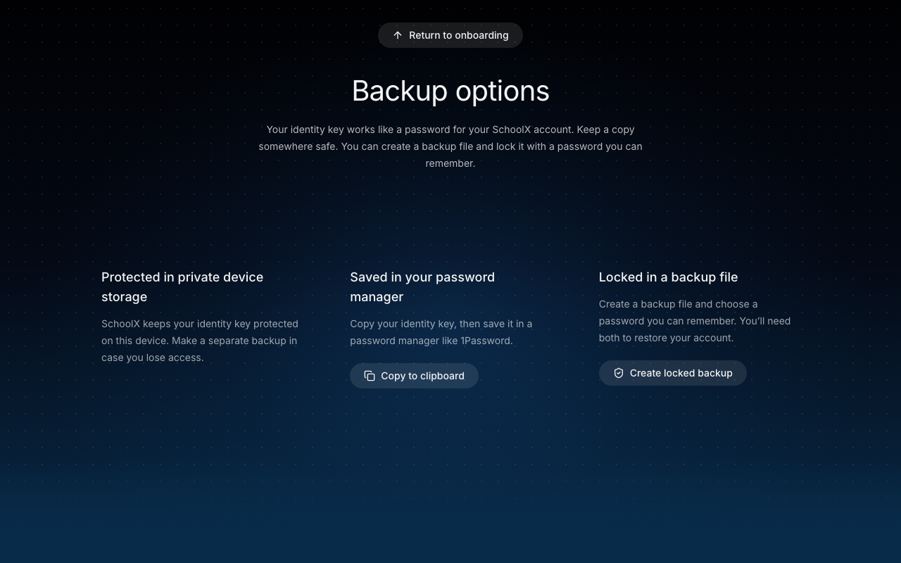
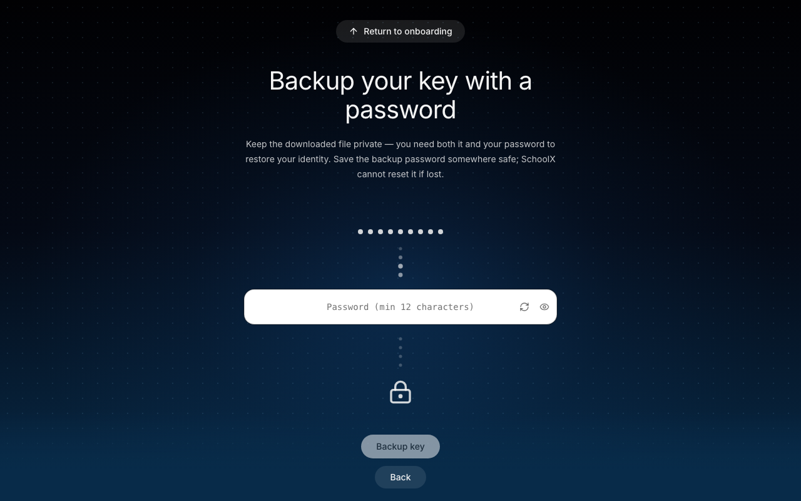
비밀번호를 건 백업 파일을 만들어 두고, 그 비밀번호는 평소 쓰는 비밀번호 관리 앱이나 손으로 적어 안전한 곳에 보관하세요. 열쇠 자체를 메신저나 메일로 보내는 것은 피하시는 게 좋습니다.
팀원 화면에 보일 내 모습입니다. 나중에 바꿀 수 있습니다.
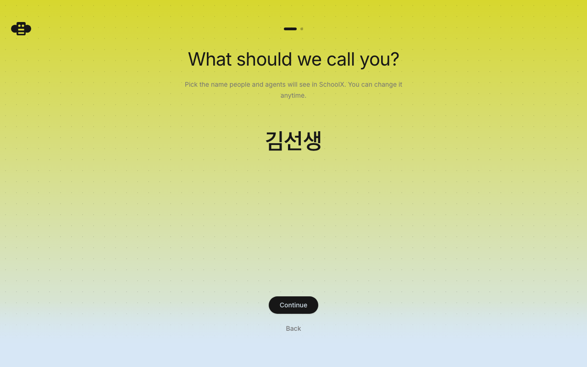
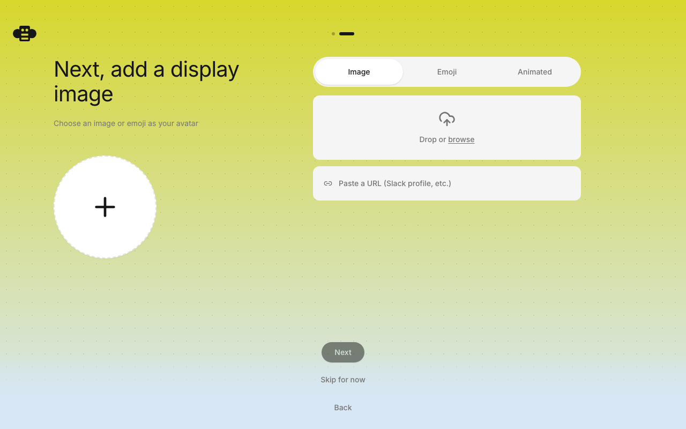
「하네스(harness)」는 AI를 실제로 실행해 주는 프로그램입니다. 여러 종류가 있고, 그중 하나를 고릅니다.
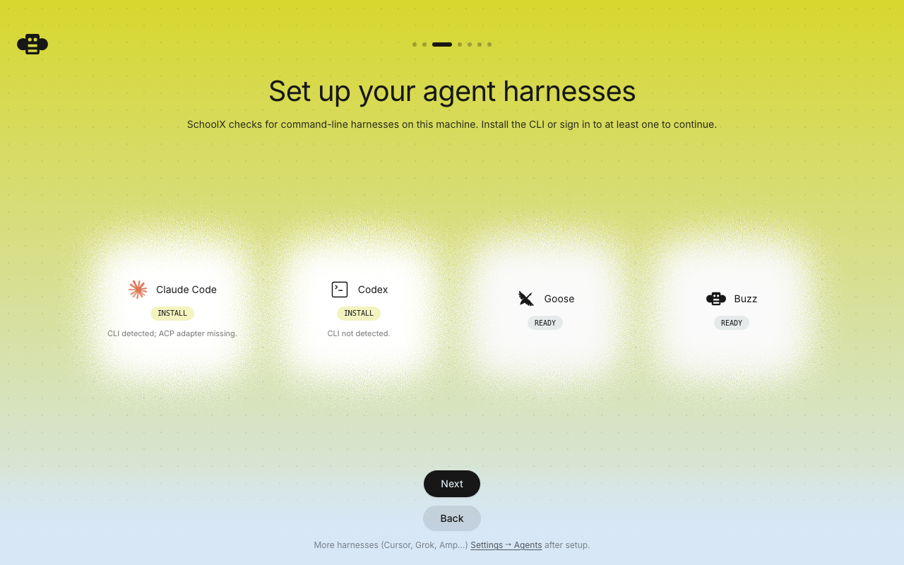
특별한 이유가 없다면 Buzz를 그대로 두고 Next를 누르시면 됩니다. 설치할 것이 없기 때문입니다.
여기서 READY는 실행할 프로그램이 컴퓨터에 있다는 뜻입니다. Buzz 하네스 자체에는 AI가 들어 있지 않고, 실제 답변은 외부 AI 서비스에 물어봐서 받아옵니다.
그래서 AI 기능을 쓰려면 5장의 API 키 설정이 반드시 필요합니다. 다만 채팅·채널 같은 협업 기능은 이 설정 없이도 모두 쓸 수 있으니, 키를 아직 못 받으셨다면 여기서 멈추고 앱을 사용하셔도 됩니다.
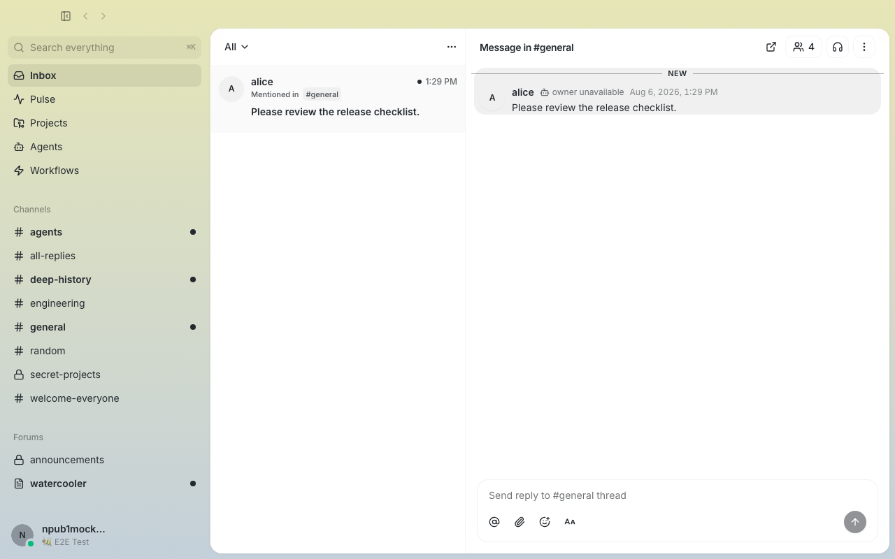
선생님께 받은 API 키가 있어야 하는 단계입니다. 키가 없다면 이 장은 건너뛰세요.
오른쪽 위 프로필 → Settings → 왼쪽 메뉴의 Agents로 들어갑니다.
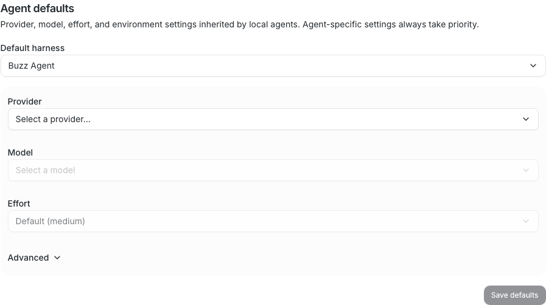
순서가 중요합니다. Provider를 먼저 고르지 않으면 Model을 고를 수 없습니다.
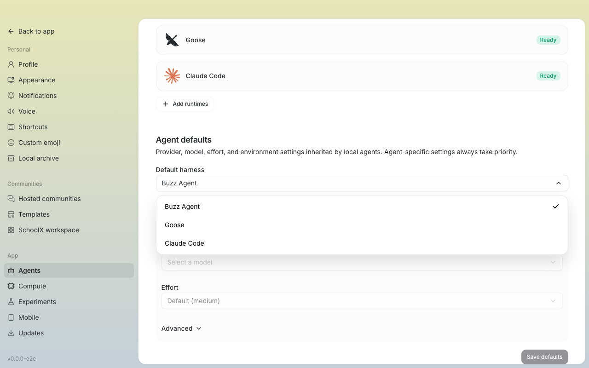
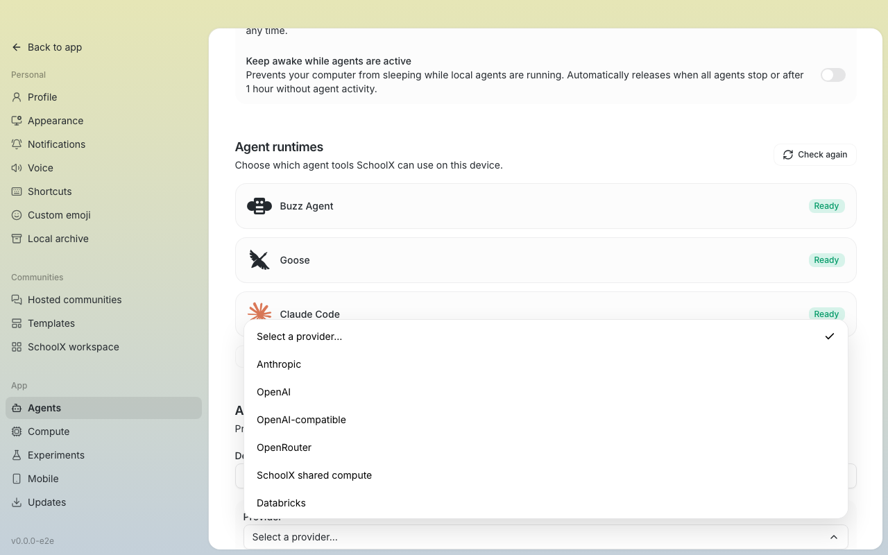
이 항목은 API 키 없이, 커뮤니티의 다른 컴퓨터가 나눠 주는 연산을 빌려 쓰는 방식입니다. 그러려면 누군가 실제로 연산을 공유하고 있어야 하는데, 지금 배포본에는 그 기능이 빌드에 포함되어 있지 않습니다. 골라도 응답을 받지 못할 수 있으니 Anthropic을 고르세요.
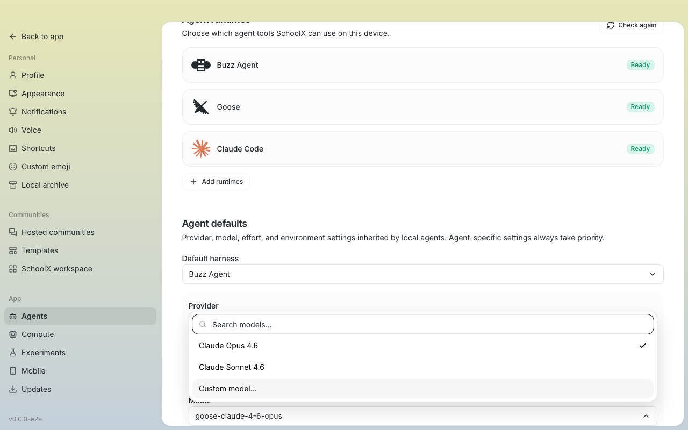
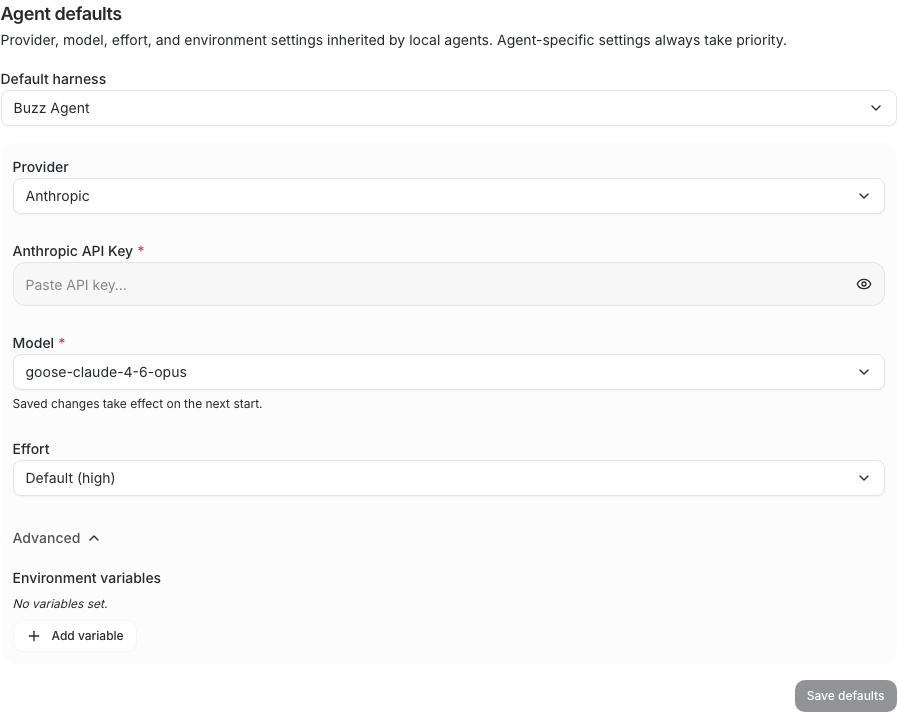
화면에 «Saved changes take effect on the next start»라고 적혀 있습니다. 저장한 설정은 앱을 껐다 켠 다음에 적용됩니다. 저장했는데 AI가 응답하지 않으면 먼저 앱을 다시 켜 보세요.
키가 있으면 누구나 그 키로 요금을 발생시킬 수 있습니다. 단체 채팅방에 올리거나 다른 사람에게 전달하지 마세요. 키가 노출된 것 같으면 즉시 선생님께 알려 주세요 — 발급자가 그 키를 폐기하고 새로 만들어 드릴 수 있습니다.
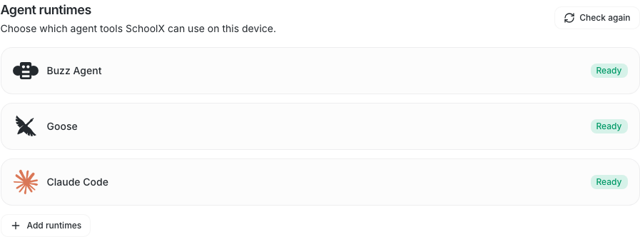
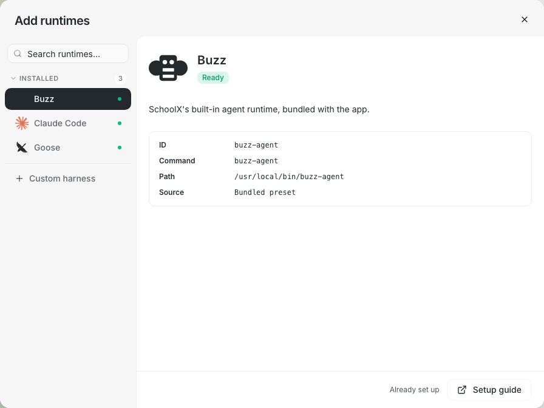
자주 나오는 증상과 실제 원인입니다.
| 증상 | 먼저 확인할 것 |
|---|---|
| 앱이 아예 실행되지 않는다 | 내 Mac 칩에 맞는 파일을 받았는지 확인하세요(1장). Apple Silicon용 파일은 Intel Mac에서 실행되지 않고, 그 증상이 서명 경고와 똑같이 보입니다. |
| 「확인되지 않은 개발자」 경고가 뜬다 | 정상입니다. 더블클릭 대신 오른쪽 클릭 → 열기를 쓰세요. 그래도 막히면 시스템 설정 → 개인정보 보호 및 보안에서 허용 버튼을 누릅니다. |
| Model을 고를 수 없다 (흐리게 잠김) | Provider를 먼저 골라야 합니다(그림 10·12). 순서를 바꿀 수 없습니다. |
| Save defaults 버튼이 눌리지 않는다 | 별표(*)가 붙은 칸이 비어 있습니다. Provider, API Key, Model 세 가지가 모두 채워져야 저장됩니다. |
| 설정을 저장했는데 AI가 응답하지 않는다 | 앱을 완전히 껐다가 다시 켜 주세요. 설정은 다음 실행부터 적용됩니다. |
| 화면이 전부 영어다 | 현재 정상입니다. 한글화는 진행 중입니다. |
| 열쇠를 잃어버렸다 | 백업 파일이 있으면 첫 화면의 Use an existing key로 되살릴 수 있습니다. 백업이 없으면 되찾을 방법이 없으므로 새로 만들어야 합니다. |
어느 화면에서 막혔는지와 화면 사진을 함께 알려 주시면 훨씬 빨리 확인할 수 있습니다. 이 설명서의 그림 번호를 말씀해 주셔도 좋습니다.